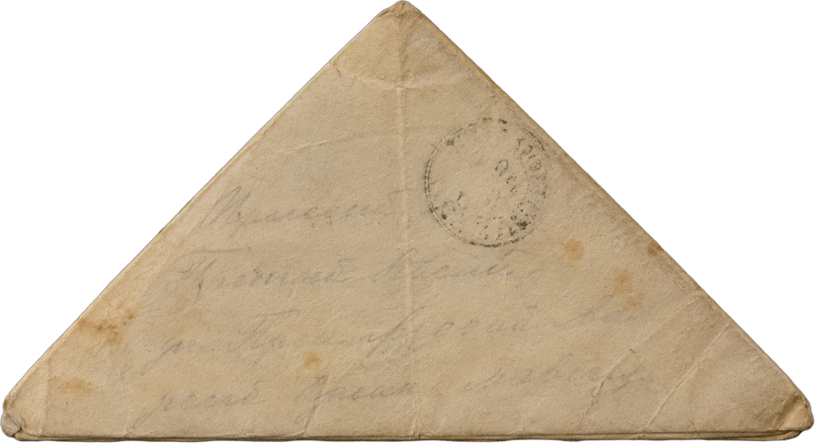
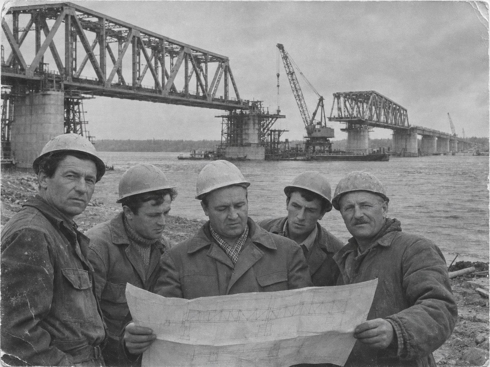
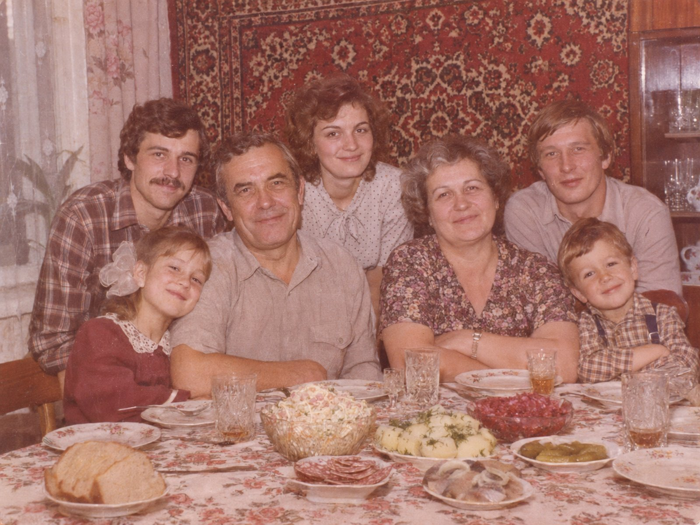

Маша,
береги ребят.
Вернусь - достроим
веранду, как хотели.
Пётр
Сохраняем то, что любим
Фотографии, письма и истории пяти поколений. Собрали то, что помним, чтобы однажды передать дальше.
Открыть альбом
Помнишь, как это было?
За каждым снимком - целая жизнь

Он строил мосты. Она работала чертёжницей и однажды нашла ошибку в его расчётах. Так началась их общая история.

Тридцать лет на мостах, от Урала до Енисея. Дома он тоже чинил всё сам: штангенциркуль лежал в кармане даже на даче.

У каждого на этой фотографии своя история. Вместе они складываются в нашу - с родными лицами и знакомым с детства домом.
Из коробки с фотографиями
На обороте - даты и знакомый почерк.
На лицевой стороне - целая жизнь.
Нажмите на фотографию, чтобы рассмотреть поближе.
Из семейного архива
Тридцать семь писем-треугольников. Пётр писал Марии каждую неделю. Семья сохранила их и передавала из поколения в поколение.
Последнее письмо. Май 1943 года.
Маша,
береги ребят.
Вернусь - достроим
веранду, как хотели.
Пётр
Люди нашей истории
Имена, лица и нити между ними.
Нажмите на карточку человека.